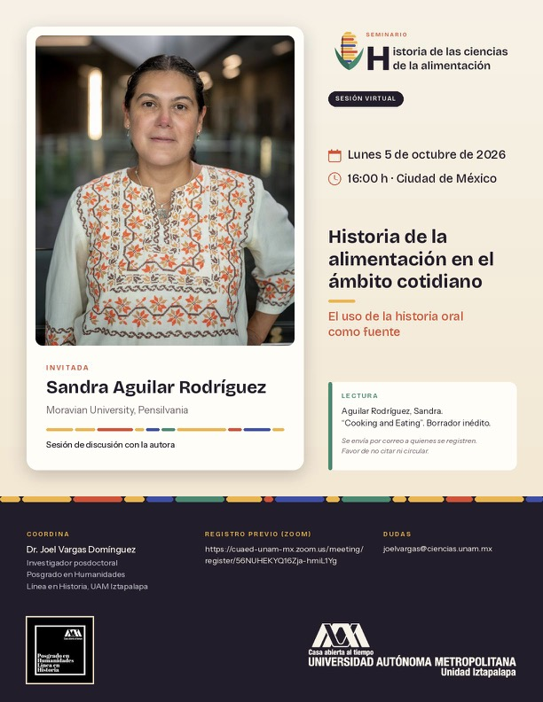

Oct
2026
Seminario
Historia de la alimentación en el ámbito cotidiano — Sandra Aguilar Rodríguez
Sesión virtual · Lunes 5 de octubre de 2026 · 16:00 h (CDMX). Sesión de discusión con Sandra Aguilar Rodríguez (Moravian University, Pensilvania).
